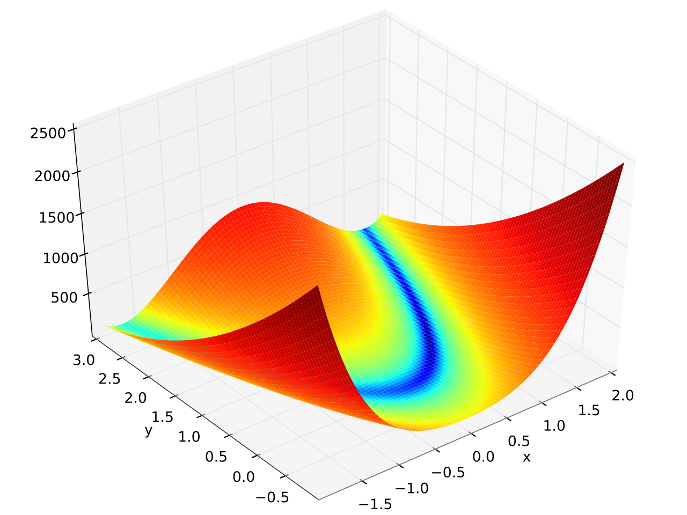

The sci.fmin and sci.fmax modules deal respectively with the numerical minimization and numerical maximization of functions of one or more variables. To simplify the exposition only the case of function minimization is discussed here. All algorithms are implemented symmetrically for both sci.fmin and sci.fmax modules.
An adaptive version of the differential evolution global stochastic optimizer for non-linearly constrained real valued functions of multiple variables based on Huang&Qin[06]. The function to be minimized, f, takes as input a single vector. Options is a table and the algorithm makes use of the following string keys (defaults in square brackets):
| Key | Description |
|---|---|
stop | [1e-6] maximum range for the population or stop function(xm, fm, vm, xval, fval, vval) |
xl | upper bound for the population (vector) |
xu | lower bound for the population (vector) |
x0 | initial population (matrix, individuals as rows) |
np | [rule of thumb] population size |
constraint | [nil] constraint function(x, lt) |
rng | [prng.std()] pseudo random generator to be used |
If stop is a positive quantity, the algorithm stops when the maximum range over each dimension of the population gets smaller than the specified quantity. Otherwise stop is a function which is invoked after each generation and returns true to signal the end of the optimization. Its arguments are: the current argmin, the current minimum, the violation (i.e. the evaluation of constraint(x, lt)) for the current minimum, the current population matrix (individuals as rows), the vector of evaluations of f(x) corresponding to the current population, vector of violations corresponding to the current population.
The algorithm requires either xl and xu or x0. If x0 is present then the initial population is set equal to x0 and np is implicitly determined. Otherwise the hypercube defined by xl, xu is uniformly filled with np individuals.
If np is not set then it's determined according to a rule of thumb based on the dimensionality of the problem.
The function constraint(x, lt) allows to specify any kind of linear and non-linear constraint. Constraints must be expressed using lt(x, y) for x < y, summed together and returned from the function. The use of lt() results in constraint() returning a positive quantity whenever the constraint are not satisfied and 0 whenever they are. We refer to this quantity as violation. If constratin() is not specified, it is assumed to always return 0, i.e. the range of the function to be optimized is unbounded.
The algorithm guarantees not to evaluate f(x) at any point there the violation is positive, i.e. where the constraints are not satisfied.
It should be noted that in this variant of the Differential Evolution the population is allowed to move outside of the initial region if not constrained so by the use of constraint().
If rng is not set a new pseudo random generator is created via prng.std().
When the algorithm terminates it returns: the current argmin, the current minimum, the violation for the current minimum, the current population matrix (individuals as rows), the vector of evaluations of f corresponding to the current population, vector of violations corresponding to the current population.
In this example fmin.de() is used to minimize the 6 dimensional version of the Rosenbrock function which is defined as \( f(\mathbf{x}) = \sum_{i = 1}^{N-1} \left[ \left(1 - x_i \right)^2 + 100 \left(x_{i+1} - x_i^2 \right)^2 \right] \) and has a banana shape (see plot at the end of this page):
-- Load required modules and localize math functions:
local alg = require "sci.alg"
local fmin = require "sci.fmin"
local min, max = math.min, math.max
local N = 6 -- Number of dimensions.
-- Rosenbrock function:
local function f(x)
local sum = 0
for i=1,N-1 do
sum = sum + (1 - x[i])^2 + 100*(x[i+1] - x[i]^2)^2
end
return sum
end
-- Wide initial range:
local xl, xu = alg.vec(N), alg.vec(N)
for i=1,N do
xl[i], xu[i] = -100, 100
end
local start = os.clock() -- For timing.
local xm, fm = fmin.de(f, {
xl = xl,
xu = xu,
})
local time = os.clock() - start
print("argmin : "..xm
print("f(argmin) : "..fm)
print("CPU secs : "..time)
--> argmin : +1.000000,+1.000000,+1.000000,+1.000000,+1.000000,+1.000000
--> f(argmin) : +1.247-15
--> CPU secs : +0.010166
Plot of the 2 dimensional version:
